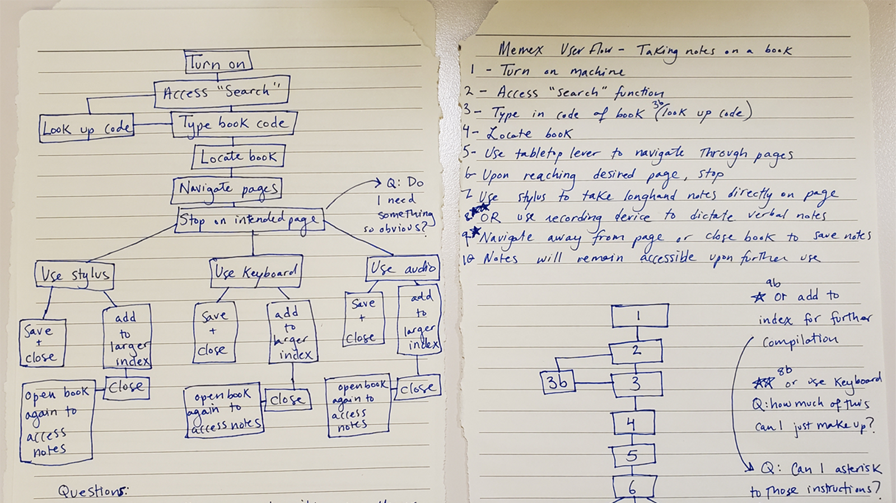
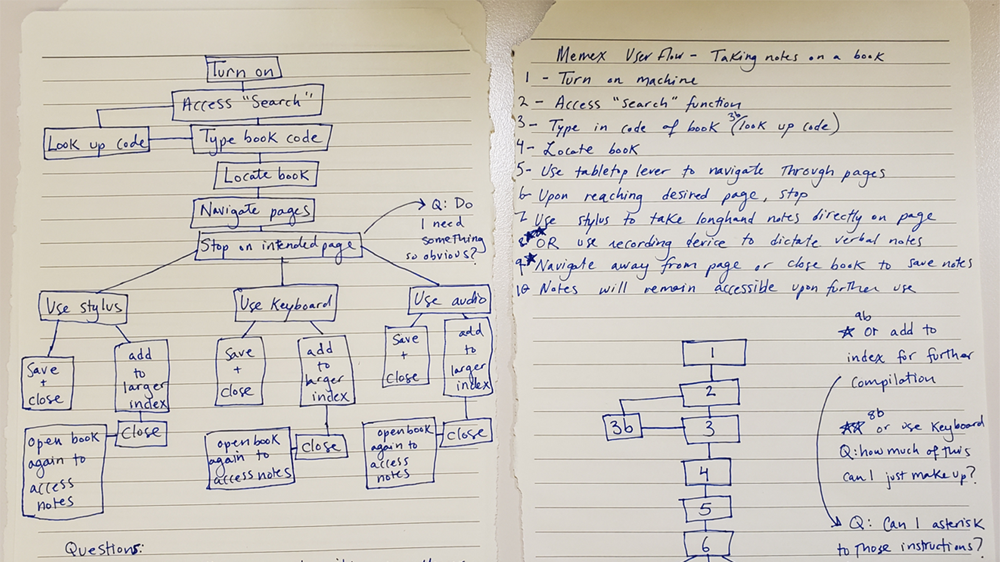
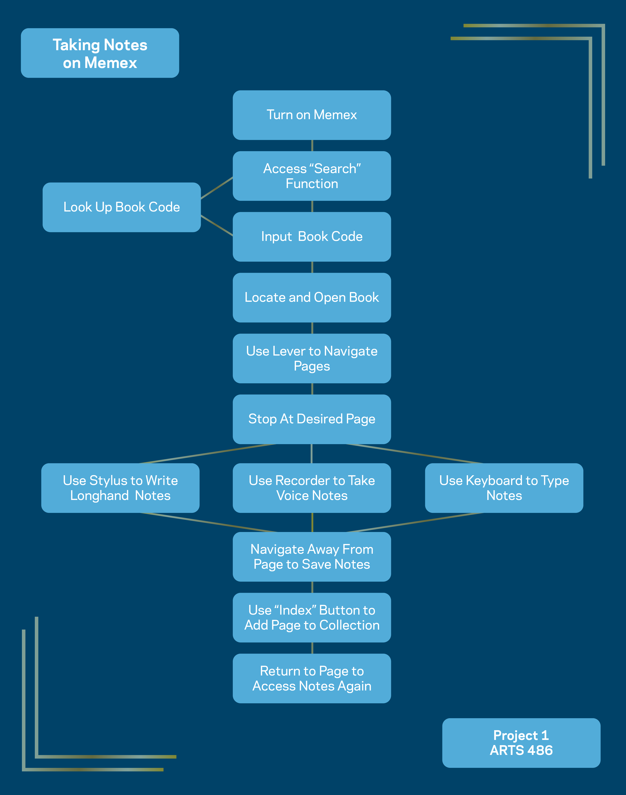

Project 1: As We May Rethink
Memex Functional Specification

A flexible exploration of the functionality of an object, a functional specification can be elaborate or simple, depending on the levels of complexity within the object.
A recent graduate of Binghamton University, working as a freelance Graphic Designer and Photographer. Currently located in Manhattan.

A flexible exploration of the functionality of an object, a functional specification can be elaborate or simple, depending on the levels of complexity within the object.

A user flow diagram allows for the visualization of an interactive interface, showing the process that occurs as choices are made.